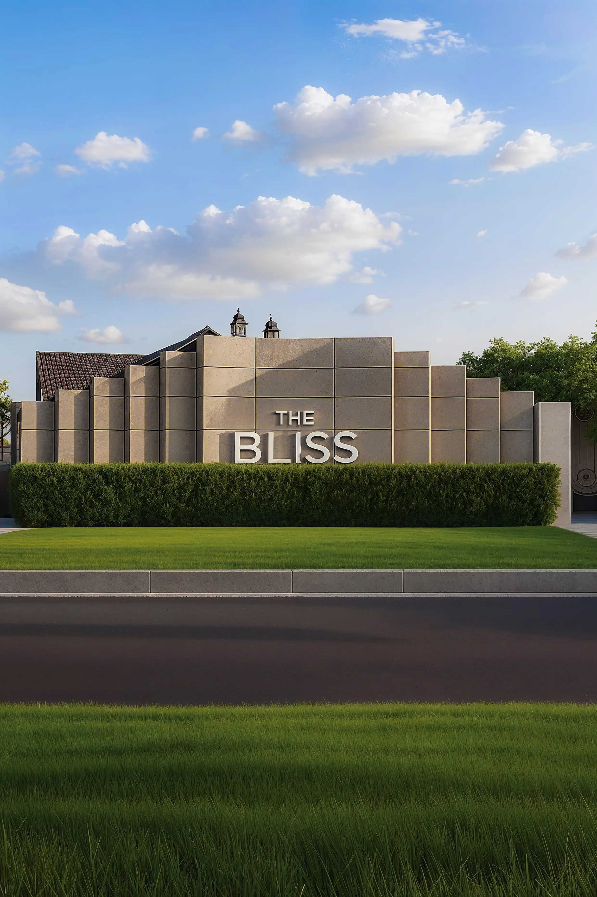
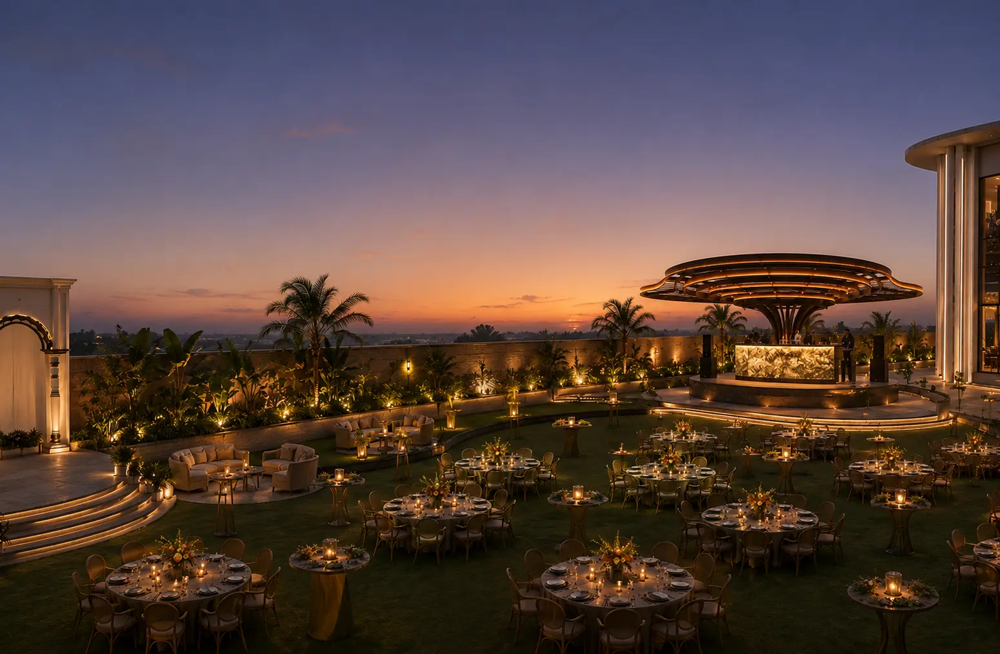

Guests judge a hotel by its lobby, rooms and restaurants. Staff judge it by everything behind the doors marked "Staff Only". Both verdicts are decided on the same set of drawings, usually in the first few weeks of design.
Back-of-house is the part of a hotel that guests never see: kitchens, stores, laundry, housekeeping, engineering, staff changing rooms, offices and the loading bay. Circulation is the network of corridors, lifts and paths that ties those spaces to the guest areas they serve. When the two are planned well, food arrives hot, rooms turn over fast, linen and rubbish move without being seen, and a wedding for several hundred guests runs without a waiter crossing the bride's path with a crate of dirty plates.
This guide explains hotel back-of-house and circulation planning for Indian projects, from adjacencies and service lifts to banquet servicing and spread-out resorts. It builds on our guide to hotel master planning, which covers the space programme and site zoning at a larger scale.
Why Back-of-House Planning Matters
Back-of-house is easy to squeeze. It earns no room revenue, owners rarely walk through it during design reviews, and every square metre taken from it can be given to a bigger lobby or another key. On a spreadsheet the trade looks sensible. Once the hotel opens, it gets expensive.
Architect Anil Badan, writing in Outlook Traveller, writes that when service areas are badly planned or poorly connected, the hotel pays every day through higher manpower needs. He also estimates that nearly 25 to 30 per cent of a hotel's life-cycle cost is fixed during the planning phase. A long walk from kitchen to banquet hall, a service lift that cannot take a housekeeping trolley, or a store two floors from the receiving bay all become permanent staffing costs.
What the Back-of-House Contains
A full-service hotel in India usually needs the following. The Archgyan hotel design guide lists a similar set.
- Receiving and loading. A truck bay, a receiving area with weighing and checking space, and a security post that logs every delivery.
- Stores. Dry stores, cold rooms and freezers, a beverage and liquor store under lock, housekeeping stores, engineering stores and general stores.
- Kitchens. A main production kitchen, satellite or finishing kitchens beside each outlet, a banquet kitchen, a bakery and pastry section, butchery, and a dishwashing or stewarding area.
- Laundry and linen. An on-site laundry, or a linen room for an outsourced service, plus a uniform room.
- Housekeeping. The housekeeping office, linen and amenity stores, and a pantry or linen room on each guest floor.
- Engineering. Workshops, plant rooms, electrical and DG rooms, water and sewage treatment, and the building management room.
- Staff areas. A staff entrance with a time office and security check, locker and changing rooms, toilets and showers, the staff cafeteria, and a training room.
- Waste. Segregated garbage rooms for wet, dry and recyclable waste, ideally with a cooled room for wet waste, and a clear route to the collection vehicle.
For sizing, the common rule of thumb in our master planning guide is 15 to 25 per cent of gross floor area for a full-service hotel. A business hotel with one restaurant needs less. A wedding-led resort with several halls and lawns needs more, because food and beverage drives most of the back-of-house area.
Key Adjacencies
Most back-of-house design comes down to what sits next to what. Get it right and corridors stay short. These are the relationships we check first on any hotel plan.
| Space | Must sit next to or connect directly with | Keep away from |
|---|---|---|
| Receiving bay | Stores, cold rooms, main kitchen, security post | Guest arrival court, pool, guest views |
| Main kitchen | Stores, all-day dining, banquet kitchen, room service, service lift | Guest rooms above without proper exhaust routing |
| Banquet kitchen or pantry | Banquet halls and lawns, through a service corridor | Pre-function and guest entry to the hall |
| Dishwashing and stewarding | Kitchen return side, garbage room | Clean food preparation areas |
| Laundry or linen room | Service lifts, housekeeping office, uniform room | Kitchens (lint and steam), guest areas (noise) |
| Staff entrance | Time office, security, lockers, HR | Main guest entrance and lobby |
| Lockers and staff cafeteria | Staff entrance, uniform room | Guest-facing outlets |
| Garbage room | Service road, dishwashing, service lift | Receiving of fresh food, guest windows, air intakes |
Some adjacencies are less obvious. WATG's Nicole Hammond, in an article on back-of-house design for luxury hotels, notes that HR should sit near the staff entrance so job candidates are not walked into the core of the building. The same applies to vendors and contractors.
Clean and Dirty Flows
Clean flow is fresh food, clean linen, new stock and plated meals. Dirty flow is used plates, soiled linen and rubbish. The two should move on separate routes, or at least never cross at the same time of day.
In the kitchen
A kitchen should work in one direction: receiving, storage, preparation, cooking, plating, service. Used plates come back on a separate return path to the dishwash, which sits on the dirty side and leads to the garbage room. If a waiter carrying dirty plates has to pass the plating counter, the layout is wrong. Food safety rules under FSSAI also expect separation of raw and cooked food, and a one-way plan makes that easier.
For linen
Soiled linen leaves the room in a bag, goes to the floor linen room, travels down a chute or the service lift to the laundry, gets washed, and returns as clean linen to the same floor stores. The soiled sorting area and the clean folding area in the laundry should be clearly divided. If laundry is outsourced, the linen room needs separate clean and soiled holding areas and a short route to the van.
For waste
Waste should go out on a route that does not pass receiving, and the garbage room should not sit upwind of kitchen air intakes. Hammond's WATG article points out that remote resorts need larger refuse storage because collection is less frequent, and that in hot climates this storage should be temperature controlled. Most Indian resort sites outside cities fall into that category.
Vertical Circulation: Service Cores and Lifts
In a multi-storey hotel, the service core is the spine of the back-of-house. It typically holds the service lifts, a service stair, the linen chute and the floor pantry or linen room, with shafts for services running alongside.
- Separate lifts. Guests should not share a lift with room-service trolleys, laundry bags or maintenance crews. Even a small hotel benefits from one dedicated service lift.
- Size for trolleys. Service lifts carry housekeeping trolleys, banquet trolleys and furniture. Archgyan suggests a minimum cab interior of about 1.4 by 2.4 metres for housekeeping carts. Operator standards, where a brand is involved, set the final size.
- One location on every floor. Stacking the service core in the same place on each floor keeps chutes and shafts straight and makes the building easy for new staff to learn.
- Lobby separation. The service lift should open into a service lobby or the linen room, never into the guest lift lobby.
- Fire and access. Lift and stair provision must also meet the fire rules under the National Building Code and local bye-laws. Those decide minimums. Operations decide how many more you need.
Guest Floors: Linen Rooms and Corridors
On each guest floor, housekeeping needs a base. The floor linen room holds clean linen, amenities, a trolley parking bay and a soiled linen holding point. Archgyan recommends a housekeeping closet of at least 6 to 8 square metres per floor. Large floors may need two, placed so no room is too far from either.
The guest corridor itself carries both guests and housekeeping. In most hotels that cannot be avoided, so the job is to reduce friction:
- Short runs from the core. Place the linen room near the middle of the floor or at the junction of two wings, so trolleys do not cross the whole corridor.
- Durable finishes at trolley height. Corner guards, chair rails and hard-wearing carpet near the service core save repainting. Hammond describes a hotel where staff routinely used a guest corridor, leaving the carpet worn and dirty.
- Door swing. Her article also suggests service doors swing into guest areas, to reduce wear on the finishes guests see.
Horizontal Circulation: Guest Routes and Service Routes
On the ground and podium floors, guest circulation should feel like a sequence: arrival, lobby, then a clear choice of restaurants, banquet, pool or rooms. Service circulation runs behind it as a parallel network, meeting it only at controlled points.
- Separate entrances. A guest entrance, a banquet or event entrance where volumes justify it, and a service entrance on a different side of the site.
- A service corridor behind the outlets. Restaurants, bars and banquet halls should back onto one continuous service corridor that connects to the main kitchen, stores and service lifts.
- Controlled crossing points. Where staff must enter guest space, use a pantry or staging area so the door does not open straight onto diners.
- No ramps on food routes. The WATG article warns against ramps that can tip food off trolleys. If levels change, a short service lift or a properly graded slope is safer.

The Bliss in Bijnor, a 2-acre banquet and celebration venue with 3,750 sq m of carpet area, shows why this matters at event scale. Its plan keeps guest and service circulation clearly apart, so high-capacity events run smoothly without disturbing guests.
Servicing Banquets and Wedding Lawns
In India, banquets are often the busiest part of a hotel. A single wedding can bring more people through the building in an evening than the rooms see in a week, with functions running back to back for days.
Kitchens and pantries
A banquet hall needs its own kitchen or a well-equipped banquet pantry right behind it, linked to the main kitchen by a service corridor wide enough for trolleys to pass each other. Where a property has several halls and lawns, one banquet kitchen can serve them all if it sits at the centre of the group.
Outside caterers and live counters
Many Indian weddings bring in outside caterers, live counters, halwais and decorators even when the hotel has its own kitchen. Give outside teams a separate service gate, a holding yard, power and water points, and a wash area so they do not set up in guest view. Live counters on lawns need a covered back zone for gas cylinders, tandoors and plates.
Décor, sound and set-up
Decorators bring stage frames, flowers, lights and furniture. A banquet store with a wide door, and a service road to the back of the lawn, keep set-up trucks out of guest spaces.
Where volumes are high, banquet guests need their own drop-off, pre-function and toilets so a wedding crowd does not swamp check-in. Our guide to destination wedding resort architecture covers halls, lawns and mandaps.

Our concept for Namah Stay in Agra, a wedding resort, gives the long event lawn a separate stone-and-timber catering and DJ pavilion, so food service and sound have their own place at the lawn's edge. It is a concept design, not a built project.
Back-of-House on Spread-Out Resort Sites
A city hotel stacks its back-of-house in a basement or behind the podium. A resort spreads it across acres, so the service network becomes a set of paths and buildings.
- A central service hub. Receiving, stores, main kitchen, laundry, engineering and staff areas grouped together near the service entrance, usually at the edge of the site.
- Satellite kitchens. Pool bars, spa cafés and distant restaurants work best with finishing kitchens close by. The WATG article recommends satellite kitchens in large resorts.
- Service paths and buggy routes. A separate path network for golf carts or buggies carrying linen, room service and maintenance crews, screened from guest walks by planting or level changes.
- Villa clusters with service points. Small linen and pantry stations within each cluster of villas cut the number of long trips.
- Staff housing. Resorts outside towns often need staff accommodation on site, placed so it is close to the service hub but out of sight and earshot of guests.
On a sloping site, a service road along the upper or lower contour can reach the back of every building without crossing guest paths. At Sangam Pooja Wellness Resort in Prayagraj, villas step down the gradient towards the Ganga. A slope like this lets guest and service movement sit on different levels. Our guide on how to design a resort in India covers resort-wide planning.
Designing for Staff
Staff areas are often the first to be cut. Hammond argues that good back-of-house design supports staff wellbeing and retention, and she criticises staff dining placed in corridors or basements without daylight.
- A clear staff route. From the staff gate to security, time office, lockers, uniform room and then to the work area, without crossing guest zones.
- Decent lockers and washrooms. Separate facilities for men and women, sized for shift changeover when both shifts are in the building at once.
- A cafeteria with daylight. Staff eat several meals a day on site. A room with windows and fresh air costs little, and staff notice it.
Common Back-of-House Mistakes
- Treating back-of-house as leftover space. Drawing the guest areas first and fitting services into whatever remains. Kitchens end up far from outlets and stores far from receiving.
- One lift for everyone. Guests riding with garbage, linen and room-service trolleys.
- No banquet kitchen. Food for large events carried from the main kitchen through public corridors or across lawns in view of guests.
- Crossing clean and dirty flows. Dirty plates passing the plating counter, or garbage leaving through the receiving bay.
- No plan for outside caterers and decorators. Vendors set up wherever they can, often in guest view.
- Bringing the operator in late. A brand's technical standards cover back-of-house sizes, lifts and kitchens. Learning them after the plan is fixed means redrawing it. Our hotel feasibility study guide explains why the operator conversation should start early.
How We Plan Back-of-House
We start with flows before floor plans. For each project we map how guests arrive, how food reaches every outlet, how linen and rubbish move, how staff enter, and how a large event is set up and cleared. Only then do we fix where the kitchen, stores, cores and service road go. If an operator is involved, we design to its technical standards from the concept stage, as we do on our 5-star hotel projects.
Because architecture and interiors sit in one studio, the same team carries the service routes through to finishes and door hardware. Our hotel and hospitality projects typically start upward of ₹20 crore.
Frequently Asked Questions
What is back-of-house in a hotel?
Back-of-house is every part of the hotel that guests do not use. It includes receiving and loading, stores, kitchens, laundry, housekeeping, engineering and plant rooms, staff entrance, lockers and cafeteria, administration offices and the garbage rooms.
How much area does back-of-house need?
A common rule of thumb for a full-service hotel is 15 to 25 percent of gross floor area. A limited-service hotel needs less, while a property with several banquet halls, restaurants and an on-site laundry sits at the higher end. Operator standards, where a brand is involved, give the final figures.
Why should guest and service circulation be separated?
Separation keeps trolleys, waste, linen and deliveries out of guest view, cuts noise and smells in guest areas, and lets staff move faster on short dedicated routes. It also lowers wear on guest-facing finishes and reduces the number of staff needed to deliver the same service.
Does a small hotel need a separate service lift?
In most cases, yes. Even a small hotel with a few floors benefits from one service lift sized for housekeeping and room-service trolleys, so guests never share a lift with laundry bags or garbage. Fire and building rules set the minimum, and operations usually justify more.
How should a wedding-focused hotel plan its back-of-house?
It needs a banquet kitchen or pantry behind each hall or group of halls, a service corridor to the main kitchen, a separate gate and holding yard for outside caterers and decorators, a large banquet store, and a service road to the back of the lawns. Banquet guests should also have their own entrance and pre-function space where volumes are high.
Plan the Hidden Hotel First
The back-of-house decides how many people a hotel needs, how fast rooms turn over, how hot the food arrives and how calm a large wedding feels. Most of those outcomes are fixed when the kitchen, stores, cores and service routes are first placed on the plan, and they are hard and costly to change once the structure is up.
If you are planning a hotel, resort or banquet property and want the service side worked out before the façade, talk to our principal architect about your site and programme.